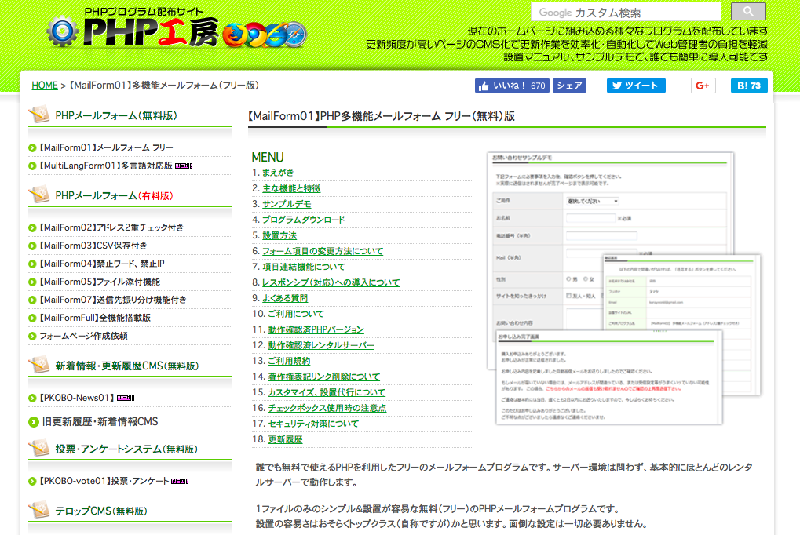
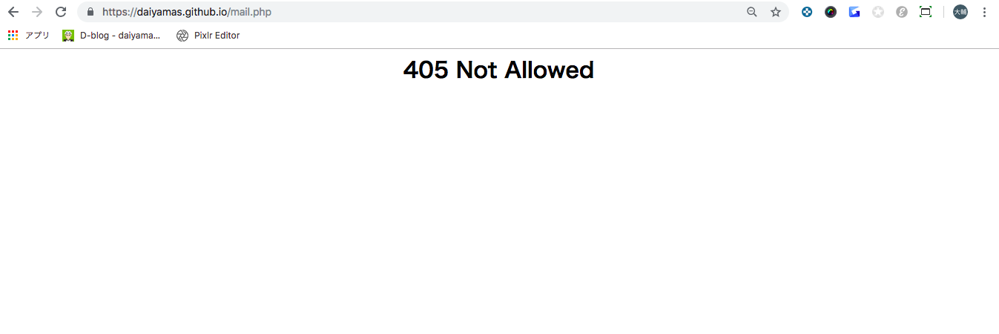

メールフォームを簡単に実装する方法。
1/17の記事で報告したとおり、メールフォームについてはBootstrapのテーマのデフォルトファイルを流用していましたが、
フリーメールのドメインでは送信元に設定できないことが発覚。再度作り直すことで一旦保留にしていたものを、
再度実装し直すことにしました。
方法としては、メールフォームの設定をphpファイルで作成し、htmlファイルに読み込ませます。ただし、作業時間に制約があるため、
phpファイルは既存のもの（フリー配布版）を流用し、htmlへの読み込みを行う方法を取ることにしました。
今回はフリー利用可能なメールフォーム「php工房」を利用します。
 php工房
phpファイルは簡単な設定のみでOK。
php工房のphpファイルは、フォームを利用した際に必要となる送信内容確認画面、送信完了画面の設定や自動返信メールの設定なども デフォルトで用意されています。「送信元のメールアドレス」と「サイトTOPのURL」を登録すれば、すぐ利用できます。 また、リファラチェックなどのセキュリティ、スパム防止のための設定も用意されています。
//--------------------------- 必須設定 必ず設定してください -----------------------
//サイトのトップページのURL ※デフォルトでは送信完了後に「トップページへ戻る」ボタンが表示されますので
$site_top = "https://daiyamas.github.io/";
//管理者のメールアドレス ※メールを受け取るメールアドレス(複数指定する場合は「,」で区切ってください 例 $to = "aa@aa.aa,bb@bb.bb";)
$to = "daiyamas@gmail.com";
//自動返信メールの送信元メールアドレス
//必ず実在するメールアドレスでかつ出来る限り設置先サイトのドメインと同じドメインのメールアドレスとすることを強く推奨します
$from = "daiyamas@gmail.com";
htmlファイルに、フォーム部分の記述を追加していきます。
contact.htmlファイルには、問い合わせフォームの下記ソースをbody要素に記述していきます。
<div id="formWrap">
<h3>お問い合わせ</h3>
<p>下記フォームに必要事項を入力後、確認ボタンを押してください。</p>
<form method="post" action="mail.php">
<table class="formTable">
<tr>
<th>ご用件</th>
<td><select name="ご用件">
<option value="">選択してください</option>
<option value="ご質問・お問い合わせ">ご質問・お問い合わせ</option>
<option value="リンクについて">リンクについて</option>
</select></td>
</tr>
<tr>
<th>お名前</th>
<td><input size="20" type="text" name="お名前" /> ※必須</td>
</tr>
<tr>
<th>電話番号（半角）</th>
<td><input size="30" type="text" name="電話番号" /></td>
</tr>
<tr>
<th>Mail（半角）</th>
<td><input size="30" type="text" name="Email" /> ※必須</td>
</tr>
<tr>
<th>お問い合わせ内容<br /></th>
<td><textarea name="お問い合わせ内容" cols="50" rows="5"></textarea></td>
</tr>
</table>
<p align="center">
<input type="submit" value=" 確認 " /> <input type="reset" value="リセット" />
</p>
</form>
<p>※IPアドレスを記録しております。いたずらや嫌がらせ等はご遠慮ください</p>
</div>
上記ソース内formWrap、formTableのCSS設定が、htmlファイルのhead部分に記述されていたため、 新たにmail.cssファイルを作成しhaed部分に読み込ませて完成です。
<head>
中略
<!-- Custom styles for this template -->
<link href="css/clean-blog.min.css" rel="stylesheet">
<link href="css/custom.css" rel="stylesheet">
<link href="css/mail.css" rel="stylesheet">
</head>
#formWrap {
width:700px;
margin:0 auto;
color:#555;
line-height:120%;
font-size:90%;
}
table.formTable{
width:100%;
margin:0 auto;
border-collapse:collapse;
}
table.formTable td,table.formTable th{
border:1px solid #ccc;
padding:10px;
}
table.formTable th{
width:30%;
font-weight:normal;
background:#efefef;
text-align:left;
}
/* 簡易版レスポンシブ用CSS（必要最低限のみとしています。ブレークポイントも含め自由に設定下さい） */
@media screen and (max-width:572px) {
#formWrap {
width:95%;
margin:0 auto;
}
table.formTable th, table.formTable td {
width:auto;
display:block;
}
table.formTable th {
margin-top:5px;
border-bottom:0;
}
input[type="text"], textarea {
width:80%;
padding:5px;
font-size:110%;
display:block;
}
input[type="submit"], input[type="reset"], input[type="button"] {
display:block;
width:100%;
height:40px;
}
}

実装したメールフォームを本番環境で動作確認したところ、フォームに必要項目を入力し、確認ボタンを 押すと、「405 Not Allowed」のアラート画面が表示されてしまいます。カスタマイズ前のファイルのまま 公開してみましたが、やはり同じ症状が出てしまいます。